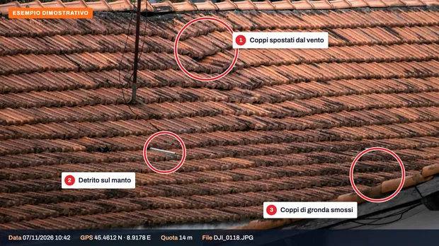
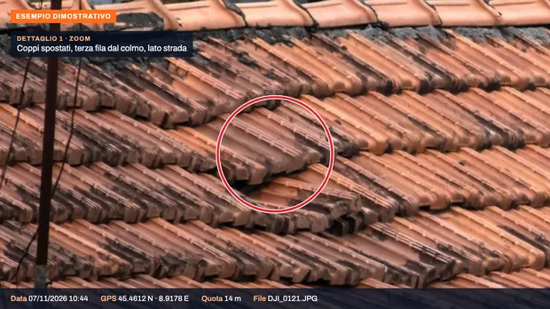

Quando serve.
Dopo un evento meteo il tetto si vede male da terra: il retro, i colmi e i comignoli restano nascosti, e salire è pericoloso. Il drone li fotografa da pochi metri.
- Vento forte e trombe d'aria: tegole e coppi spostati, colmi scoperchiati
- Grandine: lastre, lucernari e grondaie ammaccati o rotti
- Neve pesante: grondaie piegate, coperture deformate
- Alberi e rami caduti sul tetto o sulla recinzione
- Mareggiate: tetti, terrazze e facciate esposte sul mare
- Per case, seconde case, condomini, negozi, ristoranti, agriturismi e capannoni
Come funziona.
Richiesta
Su WhatsApp o via email, con l'indirizzo e, se possibile, due foto da terra. Rispondiamo via email entro 24 ore nei giorni feriali, con prezzo e date.
Volo a emergenza finita
Voliamo quando vento e pioggia sono calati e la zona non è chiusa da Protezione Civile o Comune. Il drone gira attorno al tetto e si avvicina ai punti danneggiati.
Consegna entro 24 ore
Foto e video su link o chiavetta, più una scheda di una pagina con indirizzo, data, ora e i punti danneggiati, da allegare alla denuncia.
Cosa riceve.
Il file originale di ogni foto contiene data, ora e coordinate registrate dal drone al momento dello scatto. Con la scheda di una pagina diventa una documentazione indipendente e datata dello stato del tetto, da allegare alla denuncia o da girare all'impresa per il preventivo di riparazione.
- Foto ad alta risoluzione di ogni lato
- Video del tetto
- Data, ora e GPS in ogni file
- Scheda PDF di una pagina
- Link o chiavetta
Non è una perizia. La stima del danno la fa il perito dell'assicurazione. Le nostre foto documentano cosa si vedeva quel giorno.
Esempi di consegna.
Ecco cosa riceve. Clicchi su un'immagine per ingrandirla.

Foto con i danni segnatiOgni danno numerato, con data, ora e GPS del file.

Dettagli ravvicinatiLo zoom mostra i coppi spostati da pochi metri.

Scheda da allegare alla denunciaUna pagina: indirizzo, data del volo, punti danneggiati e file.


Esempi dimostrativi su foto d'archivio: indirizzi e dati sono a titolo illustrativo.
Prezzi.
Prezzi di partenza e finali, IVA non applicata (regime forfettario).
| Servizio | Prezzo |
|---|---|
| Casa o villettacopertura fino a circa 250 m² | da 220 € |
| Condominio, capannone o copertura più grande | su preventivo |
| Volo in giornataquando il calendario lo permette | supplemento fisso |
- Il prezzo è lo stesso tutto l'anno, prima e dopo una tempesta. Il supplemento per il volo in giornata è fisso, anche nei giorni di allerta.
- Trasferta inclusa fino a 60 km dalla base; oltre, su preventivo.
- Se il giorno fissato piove o c'è troppo vento, spostiamo il volo senza costi.
Guida gratuita: cosa fotografare per l'assicurazione.
Cosa documentare da terra e in sicurezza, cosa scrivere nella denuncia e quali spese conservare. Serve anche a chi non ha bisogno del drone.
Chi vola.
Dieci anni di voli
Oltre 3.000 impianti fotovoltaici ispezionati in tutta Italia, per aziende dell'energia e studi tecnici.
In regola con ENAC
Operatore registrato, pilota con attestato A2 e categoria Specific (STS). Ogni lavoro è verificato prima sulle zone di volo D-Flight e secondo le regole ENAC.
Voli assicurati
Polizza di responsabilità civile per i voli con drone.
Domande frequenti.
Le foto del drone valgono per l'assicurazione?
Sono foto e video con data, ora e coordinate GPS, da allegare alla denuncia insieme alle foto fatte da terra. Non sostituiscono il perito: documentano lo stato del tetto in quel giorno.
Entro quando va avvisata l'assicurazione?
Il Codice civile (art. 1913) prevede l'avviso entro tre giorni dal sinistro, ma molte polizze fissano termini propri: vale quello scritto nella polizza. Le nostre foto si possono inviare anche dopo l'avviso.
Il prezzo aumenta dopo un evento?
No. Il prezzo è lo stesso tutto l'anno. Se serve il volo in giornata c'è un supplemento fisso, sempre uguale.
Volate durante l'allerta meteo?
No. Voliamo a emergenza finita, con vento e pioggia calati, e mai nelle zone chiuse da Protezione Civile, Comune o ENAC.
Fate anche condomini e capannoni?
Sì, con un preventivo gratuito. Per un condominio possiamo mandare la documentazione direttamente all'amministratore, se ce lo indica.
Riparate anche il tetto?
No, documentiamo il danno. Le foto servono anche all'impresa o al lattoniere per fare il preventivo di riparazione senza salire.